Data publicării: 16.04.2018
Autor articol: Adrian Iftene
Introducere
Ce este un chatbot?
Un chatbot este un program cu care putem comunica, prin intermediul mesajelor sau prin intermediul vocii (Guzman și Pathania, 2016). Chatboturile răspund folosind aceeași aplicație creându-se astfel o conversație. În Figura 1 avem elementele de bază din structura unui chatbot modern: componenta de chat (care ne permite să comunicăm cu aplicația chatbot), componenta bazată pe procesarea limbajului natural (care îi permite să înțelegem cât mai bine mesajul scris sau mesajul vocal trimis de utilizator), componenta bazată pe inteligență artificială (care ajută chatbotul să evolueze de la o discuție la alta și să se adapteze la scenariile noi, care pot apare).
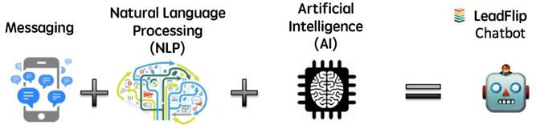
Prima versiune de chatbot a apărut în anul 1966, când aplicația ELIZA simula un terapeut, care răspundea la întrebările scrise ale utilizatorului folosind potriviri simple de șiruri (http://venturebeat.com/2016/08/15/a-short-history-of-chatbots-and-artificial-intelligence/) (vezi Figura 2). În prezent, chatboturile folosesc tehnici din ce în ce mai avansate pentru a înțelege mai bine întrebările utilizatorilor și pentru a putea oferi răspunsuri cât mai relevante. Astăzi un chatbot se poate ocupa de multe din funcționalitățile unui mobil sau unui site web, doar pe baza conversațiilor pe care le avem cu el, fără a fi nevoie să instalăm aplicații noi de fiecare dată.
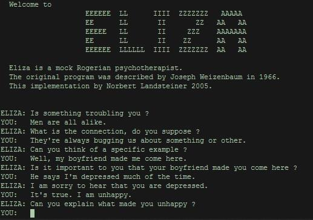
Cercetările recente din domeniul chatboturilor s-au axat pe două direcții:
- Numărul serviciilor a început să crească: din ce în ce mai multe platforme, precum Facebook messenger, WhatsApp, WeChat, Line au început să includă funcționalități pentru a face plăți, pentru a comanda produse și a face rezervări la restaurante, etc.
- Dezvoltarea componentelor de inteligență artificială: tehnicile bazate pe învățare automată și deep learning pot folosi resursele imense de date și de putere computațională, pentru a îmbunătăți semnificativ calitatea înțelegerii și a componentelor de decizie. În recunoașterea de imagini deja algoritmii de mașini learning au început să aibă o performanță mai bună decât oamenii (http://devblogs.nvidia.com/mocha-hl-deep-learning-julia/).
Statistici
În septembrie 2016, Facebook Messenger a anunțat că există peste 30.000 de chatboturi disponibile pe platforma lor (la doar cinci luni după lansarea Chatbot API) (http://techcrunch.com/2016/09/12/messenger-bot-payments/). Diversitatea lor este incredibilă, de la oferirea informațiilor despre vreme, la comandarea de mâncare, planificarea de călătorii și chiar ajutor în jucarea Pokemon Go. Microsoft, cu toate că s-a mișcat mai încet, au lansat și ei în 2016 o platformă ce permite dezvoltarea de boți (http://dev.botframework.com/) și au lansat primul chatbot pentru Skype.
În China, WeChat (http://www.wechat.com/) permite încă din 2013 adăugarea de chatboturi companiilor. WeChat are peste 10 milioane de astfel de boți, care de multe ori sunt acompaniate de utilizatori umani, oferind servicii într-o varietate foarte mare de domenii (vezi Figura 3).
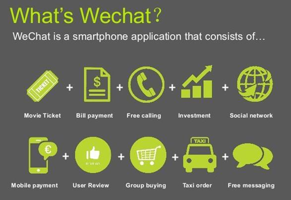
Aproape fiecare dintre noi interacționează cu chatboturile de pe smartphone-urile sau de pe calculatoarele noastre. Companiile mari precum Apple, Google, Samsung, Microsoft, Amazon și Facebook au investit sume consistente pentru a face aceste aplicații din ce în ce mai avansate.
La ce sunt bune chatboturile?
- Să ne ajute într-un anumit domeniu – cu un chatbot configurat pentru un anumit domeniu calitatea discuției în acel domeniu poate fi foarte ridicată, iar expertiza lui ne poate ajuta în ceea ce dorim să facem (Guzman și Pathania, 2016).
- Să execute mulți pași sau să proceseze mulți parametri de intrare – chatboturile pot procesa rapid ceririle cu mulți parametri, răspunzând de regulă mai rapid la astfel de cereri decât un utilizator uman.
- Să răspundă la un număr mare de cereri – numărul cererilor repetitive la care poate răspunde poate fi oricât de mare și poate elibera de munca repetitivă un agent uman, care ar putea răspunde la cereri mai complexe.
- Să răspundă la plângeri – interacțiunea cu o persoană care face o plângere este lipsită de transferul de stres dintr-o astfel de situație și chiar poate exprima empatie în discuția cu aceasta.
Servicii clienți
Pentru folosirea chatboturilor există un interes din ce în ce mai mare în zona serviciilor pentru clienți, deoarece aceștia sunt capabili să rezolve cerințele acestora repede, ieftin și consistent (Guzman și Pathania, 2016). Chatboturile clasice care asigură serviciile pentru clienți au trei componente:
- Interfața utilizator – o aplicație de tip chat clasică sau una la nivelul website-ului companiei. De asemenea, asistenții vocali precum Siri, Amazon Alexa, Google Assistant sau Cortona fac ca cerințele utilizatorilor să poată fi transmise și prin voce.
- Componenta inteligentă – permite chatboturilor să înțeleagă nevoile clienților și îi permite să evolueze după fiecare interacțiune. Chiar dacă soluțiile actuale se bazează în primul rând pe arbori de decizie, tehnicile bazate pe învățare automată au început să evolueze.
- Integrarea cu alte sisteme – permite chatboturilor să acceseze informația din surse multiple și astfel să poată răspunde la cereri din ce în ce mai complexe din partea utilizatorilor.
Top 10 platforme de dezvoltare de chatboți
În continuare vom vedea care sunt cele mai folosite platforme pentru dezvoltarea chatbot-urilor, toate echipate cu elemente de bază, dar și mai avansate pentru asta (Kumar, 2018).
I. Platforme care nu necesită scrierea de cod
1. Chatfuel
Autorii platforme Chatfuel sunt din San Francisco și au lansat produsul de bază în 2015. Platforma este foarte ușor și simplu de folosit și pemite prin operații de tip drag-and-drop crearea de chatboți chiar și pentru începători. Aplicația a fost gândită ca chatboții să poată interacționa cu clienții prin intermediul unor reguli predefinite.
Produsul permite scrierea de boți pentru platformele Telegram și Facebook Messenger. În prezent sunt peste 46.000 de astfel de chatboți, cei mai renumiți fiind cei realizați pentru firme mari, precum Adidas, MTV, Volkswagen, British Airways. Prețul este competitiv, fiind gratuit pentru elementele de bază și 30 $/lună pentru elementele mai avansate. Un exemplu de folosire a Chatfuel este în Figura 4 de mai jos.
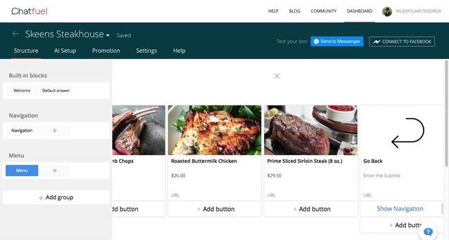
2. Botsify
Botsify este o altă platformă populară chatbot și este oferită de o companie cu sediul în Santa Clara, CA. Folosind șabloanele personalizate pentru călătorii, rezervări la restaurante etc., împreună cu funcțiile drag-and-drop, oricine poate crea un chatbot fără efort, fără a scrie o singură linie de cod.
Platforma permite crearea de chatboți pentru aplicațiile Facebook Messenger, WhatsApp, Instagram. Numărul estimat de chatboți ce folosesc Botsify este peste 40.000. Clienții de top sunt companii mare precum Apple, Shazam, Grin, Travelex, RemoteInterview, Unicef NZ. Prețul diferă în funcție de tipul de abonament: gratuit, de bază (10 $ / lună), premium (30 $ / lună) și de business (50 $ / lună). Chiar și versiunea gratuită vine cu 20 de șabloane, iar numărul lor crește odată cu prețul abonamentului. Botsify oferă capacitatea de preluare a activităților umane, pentru o tranziție lină de la un bot la un om, iar utilizatorii pot folosi emojis în conversațiile lor. Figura 5 prezintă modul cum se creează o poveste în cadrul platformei Botsify.
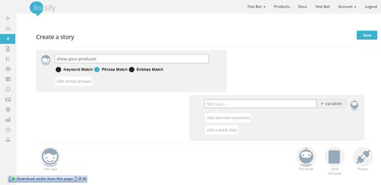
3. Flow Xo
Platforma Flow Xo de tip chatbot este oferită de compania Flow Xo, o companie de IT cu sediul în Anglia. Aceasta oferă șabloane și unelte de care aveți nevoie pentru a crea un chatbot. Pentru a rula și a testa funcțiile chatbotului platforma pune la dispoziție o consolă de test încorporată. Există o componentă ce permite interacțiune cu clienții fie prin voce, fie prin chat, iar interschimbarea între cele două moduri de comunicare se poate face la orice moment din conversație.
Platformele țintă sunt Webul WhatsApp, Facebook Messenger, Slack, Telegramă, Twilio SMS și nu se știe o estimare a numărul de chatboți ce folosesc Flow Xo. Prețul diferă în funcție de opțiunile alese de client: gratuit, standard (19 $ / lună), care poate fi îmbunătățit în continuare pentru a gestiona și mai multe interacțiuni. Figura 6 prezintă cum se poate crea un chatbot cu această platformă.
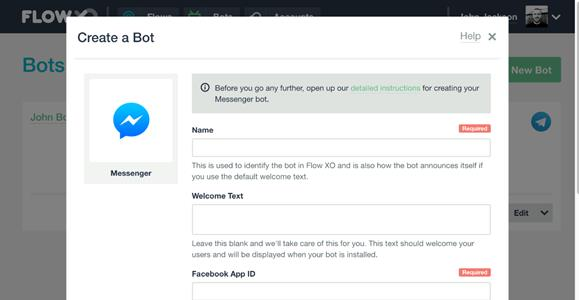
4. KITT.AI
Platforma de chatbot KITT.AI este deținută de gigantul ce realizează motoare de căutare în China, Baiduși are sediul în Washington. Are o componentă ce detectează cuvintelor importante din conversație (fără a avea nevoie de internet), face parsare semantică, înțelege limbajului natural și are o componentă de conversație și folosește un model de învățare automată bazat pe o rețea neuronală. Pune la dispoziție o colecție de funcționalități și instrumente care pot fi utilizate cu o interfață de tip drag-and-drop. KITT.AI suportă o serie de scenarii de utilizare, inclusiv automatizarea casei inteligente și cumpărăturile on-line și poate fi ușor de integrat cu aplicațiile web și mobile. Acesta oferă un set complet de instrumente, care pot fi utilizate pentru a construi chatboturi de sine stătători, capabili să suporte afacerile companiilor.
Platformele țintă sunt Alexa, Facebook Messenger, Kik, Skype, Slack, Telegramă, Twilio, iar în prezent nu se poate estima numărul chatboturilor ce folosesc această platformă. Avem un exemple de companie de top ce folosește KITT.AI: UPS. Produsul este disponibil gratuit. Figura 7 prezintă pașii principali necesari pentru a face un chatbot cu KITT.AI.
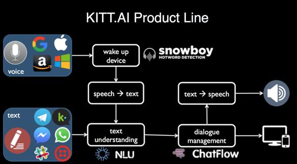
II. Platforme care necesită scrierea de cod
5. IBM Watson
IBM Watson este o platformă de dezvoltare de chatboți preferată atunci când vine vorba de construirea unui chatbot cu componente AI, care să poată purta cu ușurință o conversație complexă. Potrivit revistei Chatbots, IBM Watson este platforma folosită pentru construirea de chatboți preferată de 61% dintre companii. Ea poate procesa în jur de patru terabyte de date și este găzduit pe un grup de nouăzeci de servere IBM Power 750, fiecare dintre acestea utilizând un procesor cu opt procesoare de 3 GHz POWER7.
Dezvoltatorii de chatboți pot utiliza o gamă largă de tehnologii, cum ar fi Node SDK, Java SDK, Python SDK, iOS SDK, Salesforce SDK și Unity SDK pentru a putea integra IBM Watson în platformele pe care le dezvoltă. Un chatbot IBM Watson poate acoperi mai multe dimensiuni, inclusiv comunicarea cu clienții, educație, servicii financiare, sănătate, IoT, media, resurse umane și locuri de muncă.
Platformele țintă sunt Facebook Messenger, WhatsApp, Instagram și nu avem o estimare a numărului de chatboturi ce folosesc IBM Watson. Companii de top ce folosesc această platformă sunt: Staples, H & R Block, Autodesk. Prețurile sunt următoarele, în funcție de versiune Lite (gratuit), Standard (0,0025 USD (USD) pe apel API), Premium (prețul nu este dezvăluit). În Figura 8 de mai jos avem un exemplu de astfel de chatbot.
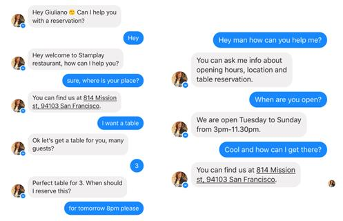
6. Microsoft Bot Framework
Oferită de Microsoft, Azure Bot Service oferă un serviciu scalabil, integrat de conectivitate și de dezvoltare pentru a ajuta dezvoltatorii să creeze chatboți inteligenți, care să poată implica utilizatorii pe mai multe platforme. Instrumentele de dezvoltare sunt furnizate cu Microsoft Bot Builder SDK, pe care dezvoltatorii .NET și Node.js le pot accesa și utiliza pentru a crea un bot vorbitor. SDK-ul include, de asemenea, un emulator pentru depanarea chatboților, precum și o colecție mare de chatboți exemplu pe care îi putem utiliza ca blocuri de construcție. Serviciul este bazat pe cloud și este accesibil în întreaga lume în 141 de țări, iar chatboții pot comunica în mai multe limbi, inclusiv engleză, franceză, italiană, germană, spaniolă, portugheză, japoneză, coreeană și chineză.
Platformele țintă sunt site-ul Web, App, Cortana, echipele Microsoft, Skype, Slack, Facebook Messenger. Numărul estimativ de chatboți de acest tip nu este disponibil. Un exemplu de companie de top ce folosește acest produs UPS. Prețul este pentru varianta standard (gratuit), iar pentru varianta premium (0,50 $ pentru 1.000 de mesaje). Elementul de bază care permite conectarea botului la serviciile de text/sms, Office 365, mail, Skype, Slack, etc. este Bot Connector, ce creează un canal de comunicare între chatbot și serviciile cu care poate comunica (vezi Figura 9 de mai jos).
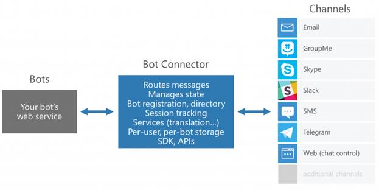
7. Wit.ai
Wit.ai este o companie de tehnologie din Palo Alto, CA. Acest constructor de chatboți conține elemente de NLP ce oferă resurse pentru a crea chatbot-uri captivante, scalabile pentru a servi diferitelor scopuri. Wit.ai învață limba umană și evoluează prin fiecare interacțiune pe care o are și ajută comunitatea să evolueze și să se îmbunătățească continuu. Chatbot-urile Wit.ai funcționează pe 50 de limbi și dezvoltatorii au flexibilitatea de a utiliza oricare din SDK-urile disponibile, cum ar fi Android, iOS, Cordova, HTML, JavaScript, Node.js, .NET, Unity, Xamarin, C ++, Python, Ruby, PHP , Epson Moverio, Botkin și Java.
Platformele țintă sunt site-urile Web, App, Cortana, aplicațiile Microsoft, Skype, Slack, Facebook Messenger. Nu avem în prezent numărul de module de tip chatbot ce folosesc Wit.ai. Un exemplu de companie de top ce folosește aceste bot: UPS. Prețul este pe variantele de abonament: standard (gratuit), premium (0,50 $ pentru 1.000 de mesaje). Figura de mai jos prezintă componenta de testare a platformei Wit.ai. Figura 10 de mai jos prezintă componenta de testare disponibilă pe platforma Wit.ai, ce ne permite să testăm funcționalitățile de bază un astfel de chatbot.
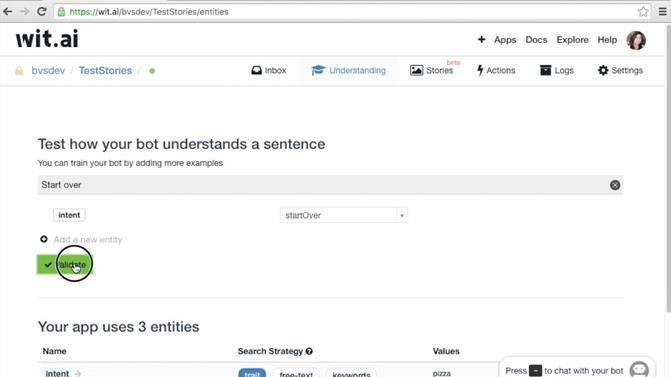
8. Semantic Machines (Mașini semantice)
Semantic Machines este o companie de dezvoltare AI cu birouri în Berkeley, CA și Boston, MA. Oferă o platformă tehnologică independentă de limbă, care depășește înțelegerea comenzilor și înțelege conversațiile. Motorul său conversativ poate folosi pentru comunicare atât text cât și vorbire și poate absorbi cunoștințe de la utilizatori pentru a-și spori capacitățile. Mașinile semantice suportă o gamă largă de cazuri de utilizare, variind de la productivitatea afacerii, achiziția de clienți și serviciul clienți pentru călătorii, comerț electronic, căutare, automobile și altele.
Platforma țintă sunt aplicațiile Web, App, Cortana, Microsoft Teams, Skype, Slack, Facebook Messenger. Numărul de chatboți ce folosesc această platformă este indisponibil. Un exemplu de companie de top ce folosește aceste bot: UPS. Prețul este indisponibil. Figura 11 prezintă modul de interacțiune dintre două chatboturi (primul construit cu Semantic Machines și cel de al doilea construit de Google) și un joc conversațional bazat pe AI.
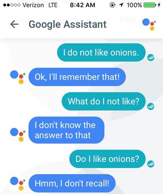
9. Reply.ai
Reply.ai este un constructor de bot vizual ce incorporează puterea motoarelor NLP și se adresează în special sectorului de asigurări. Compania operează în NYC și Spania. Wit.ai poate ajuta în special companiile de asigurări să-și optimizeze vânzările, marketingul și operațiunile de servicii pentru clienți să-și reducă costurile. Ea și-a extins serviciile pentru întreprinderi, precum și o soluție interesantă pentru companiile care combină mai multe profiluri industriale.
Platformele țintă sunt Cortana, Microsoft Echipe, Skype, Slack, Facebook Messenger. Numărul de chatboți ce folosesc această platformă este indisponibil. Exemple de companii de top ce folosesc acest bot: Samsung, Coca-Cola, KIA, Hilton, Ad Council. Prețul este indisponibil. Canalele disponibile pe platforma Reply.ai sunt prezentate în Figura 12.
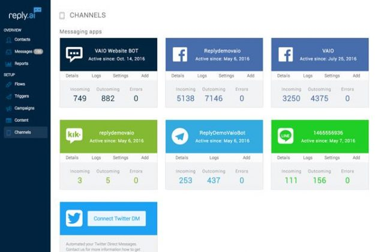
10. ManyChat
ManyChat are instrumente foarte utile, care fac dezvoltarea chatbot-ului mai ușoară și mai rapidă. Cu un API ușor de utilizat, oricine poate integra sau încorpora pe site-ul lor un chatbot. Dispune de un instrument eficient de abonare, care facilitează proprietarului unui chatbot să găsească mai mulți utilizatori și să mărească impactul acestei mărci. Cu o platformă de bază pentru chat ManyChat, este ușor să adaugăm utilizatori noi, să programăm postarea de mesaje, să comercializăm conținut, să setăm oferirea unor răspunsuri automate (text, imagini, meniuri), să difuzăm în mod automat feedul RSS și multe altele.
Platforma țintă este Facebook Messenger, iar numărul estimat de chatboturi bazate pe ManyChat: 150.000. Nu sunt disponibile exemple de companii de top ce folosesc acest produs. Prețul este în funcție de varianta dorită: gratuit sau contra cost (15 $ / lună dacă dorim să avem acces la funcțiile mai avansate). Figura 13 prezintă modul în care se trimit mesaje cu ManyChat.
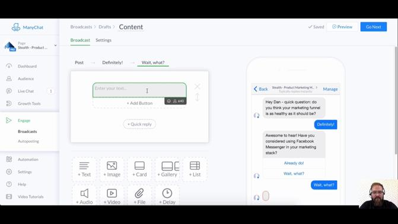
Concluzii
În perioada următoare chatbot-urile vor înlocui multe activități repetitive pe care le fac în prezent oamenii, beneficiind de avantajele că spre deosebire de oameni, nu obosesc, nu uită și-și pot mări baza de cunoștințe foarte mult și foarte repede. Oamenii se vor ocupa de situațiile deosebite, care nu se încadrează în standardele clasice recunoscute de chatbot, dar tehnicile avansate care se dezvoltă acuma bazate pe învățare automată și deep learning, vor găsi soluții și în multe de astfel de situații.
Articolul de față a prezentat caracteristicile de bază ale chatboturilor și cele mai utilizate platforme, care ne permit în prezent să facem astfel de aplicații. Platformele se adresează atât specialiștilor și suportă integrarea cu multe din platformele de dezvoltare existente, dar și nespecialiștilor, care pot cu operații de tip drag-and-drop să-și configureze propriul agent inteligent.
Referințe bibliografice
1. Guzman, I., Pathania, A. (2016) Chatbots in customer service. Accenture Inkteractive, Part of Accenture Digital. 13 pages.
2. Kumar, S. (2018) Top 10 Powerful Platforms for Chatbot Development. Dzone – AI Zone. Opinion http://dzone.com/articles/top-10-powerful-platforms-for-chatbot-development
3. http://conversion-hub.com/blog/content-marketing/can-a-chatbot-help-your-business/
4. http://venturebeat.com/2016/08/15/a-short-history-of-chatbots-and-artificial-intelligence/
5. http://www.le-grenier-informatique.fr/pages/les-documents-du-grenier/le-chatbot-eliza.html
6. http://devblogs.nvidia.com/mocha-hl-deep-learning-julia/
7. http://dev.botframework.com/
13. http://botlist.co/bots/flow-xo
16. http://www.voicebot.ai/2017/07/12/baidu-acquires-kitt-ai/
17. http://www.ibm.com/watson/how-to-build-a-chatbot/
19. http://dev.botframework.com/
20. http://azure.microsoft.com/en-us/services/bot-service/
21. http://github.com/Microsoft/BotBuilder
24. http://www.semanticmachines.com/
27. http://crozdesk.com/analytics-intelligence/artificial-intelligence-ai-software/reply-ai